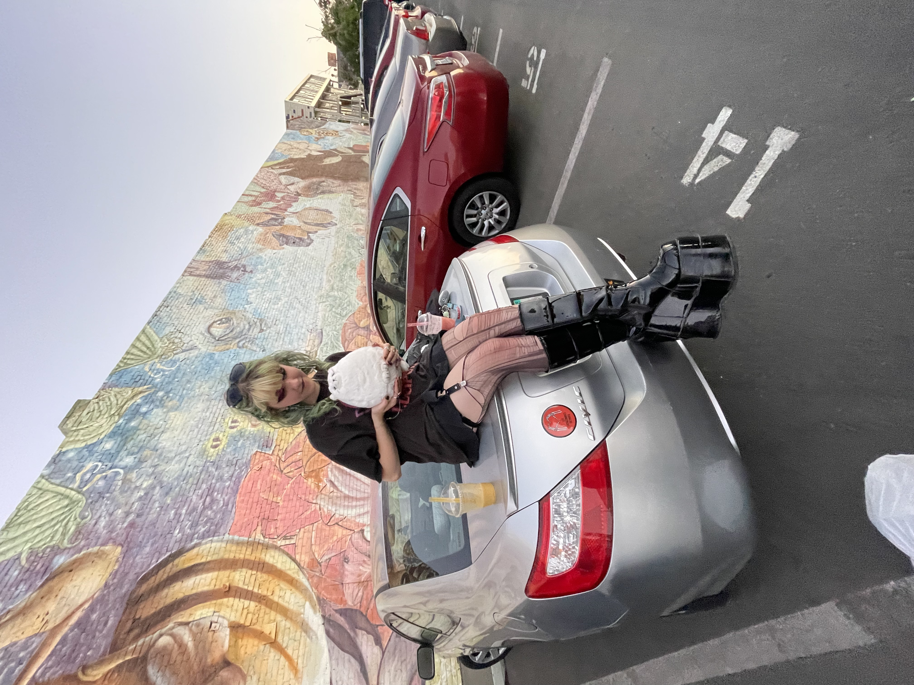

⋆⁺｡˚⋆˙‧₊☽ Lab 6 - Arrays and Objects ! ☾₊‧˙⋆˚｡⁺⋆

˚₊‧꒰ა challenge ! ໒꒱ ‧₊˚
This lab was similar to our previous lab, just with a few more steps and specifications. For this lab we started working with arrays and objects in Javascript in order to talk about our transportation.
˚₊‧꒰ა problems ! ໒꒱ ‧₊˚
I had a few issues with my Javascript, as I kept getting errors and I didn't know why. I also kept getting "NaN" showing up on my browser, and also wasn't sure why. I messed around with the code and eventually fixed it, but I'm still not quite sure what happened.
˚₊‧꒰ა reflection ! ໒꒱ ‧₊˚
Overall working with the Javascript was a bit difficult but eventually I got it working! It wasn't too bad, it is just a bit finnicky.